Vender muito não é lucrar.
Frete, ADS, imposto, custo da operação e a sua retirada. O Zaac ML coloca tudo na conta e mostra, anúncio por anúncio, quanto realmente sobra no seu bolso.
Quero ver meu lucro real30 dias grátis · sem cartão · conexão oficial do Mercado Livre
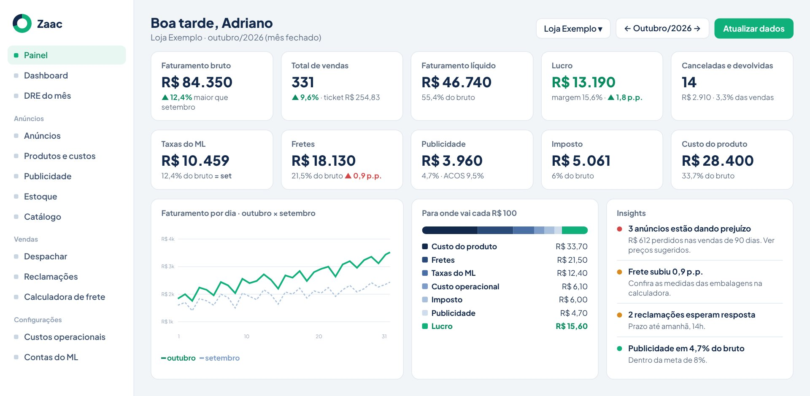
Responda rápido, sem abrir planilha
Qual anúncio está te dando prejuízo agora?
O Zaac separa os anúncios que vendem e tiram dinheiro de você, e calcula o preço mínimo de cada um.
Quanto do seu ADS vira lucro?
Veja o ADS gasto em cada anúncio e o resultado depois da publicidade. Tem anúncio que só fica no vermelho por causa dela.
A sua retirada está na conta?
Salário, equipe, contador e sistemas entram como custo operacional. Só assim o lucro é de verdade.
A conta que quase todo vendedor faz errado
Venda menos produto menos taxa do ML não é lucro.
A conta incompleta venda − produto − taxa
| Faturamento bruto | R$ 84.350 |
| − Custo do produto | R$ 28.400 |
| − Taxas do ML | R$ 10.459 |
| Fretes, imposto, ADS, operação e retirada | fora da conta |
| "Lucro" | R$ 45.491 · 53,9% |
A conta do Zaac ML tudo que sai do seu bolso
| Faturamento bruto | R$ 84.350 |
| − Produto e taxas do ML | R$ 38.859 |
| − Fretes | R$ 18.130 |
| − Imposto e ADS | R$ 9.021 |
| − Custo operacional e sua retirada | R$ 5.150 |
| Lucro de verdade | R$ 13.190 · 15,6% |
A conta incompleta mostra R$ 32.301 a mais do que realmente sobrou.
Exemplo com valores fictícios.
Tudo que o Zaac ML faz por você
Na ordem em que você vai usar. Clique em cada tópico para ver a tela e o que ela resolve.
Só descobre se o mês foi bom quando ele acaba?
Abriu o sistema, já sabe como está
A primeira tela mostra faturamento, custos e lucro de Hoje, de Ontem e do mês inteiro, sempre comparados com o período anterior.
- Hoje: o que vendeu até agora, contra ontem no mesmo horário
- Ontem: o dia fechado, contra anteontem
- Mês: o acumulado, com "Para onde vai cada R$ 100"
- Avisos de prejuízo, frete e reclamações
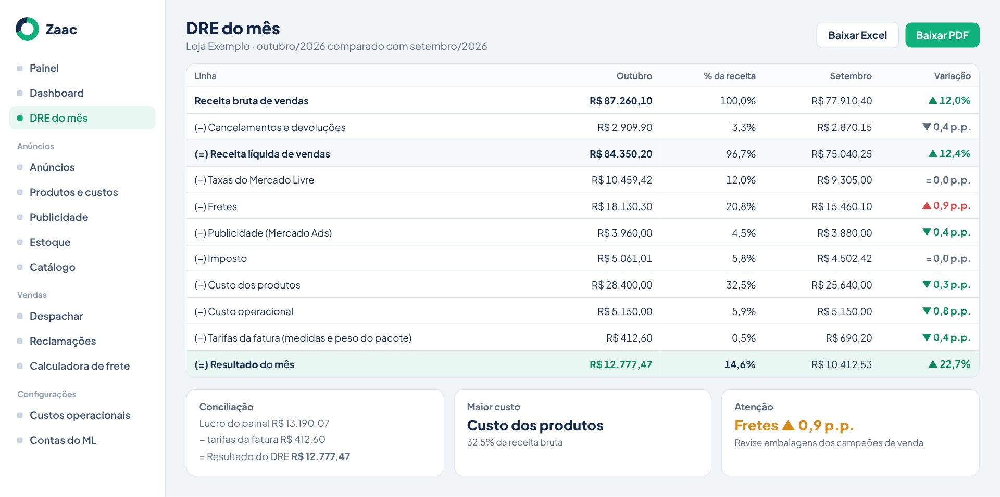
O contador pede o resultado e você não tem?
O resultado completo, pronto para o contador
O DRE monta o resultado do mês linha por linha: receita, devoluções, taxas, fretes, ADS, imposto, custos e resultado final.
- Imprima em PDF ou Excel de uma vez só, com a sua logo
- Mande direto para o contador ou para o sócio
- Inclui tarifas escondidas da fatura do ML
- Comparação com o mês anterior
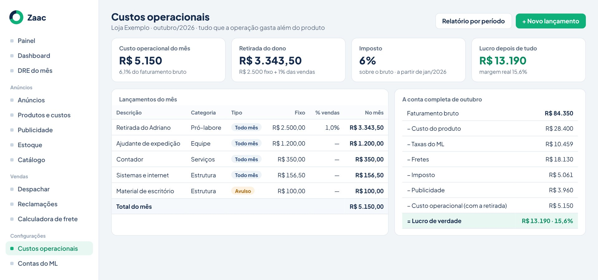
O seu salário sai do lucro ou do caixa da empresa?
O custo que quase ninguém coloca na conta
Sua retirada, equipe, contador e sistemas. Cada lançamento pode ser fixo, uma porcentagem das vendas ou os dois.
- Retirada do dono como custo (ex.: R$ 2.500 + 1%)
- Lançamentos de todo mês, avulsos e reajustes
- Imposto pela sua alíquota
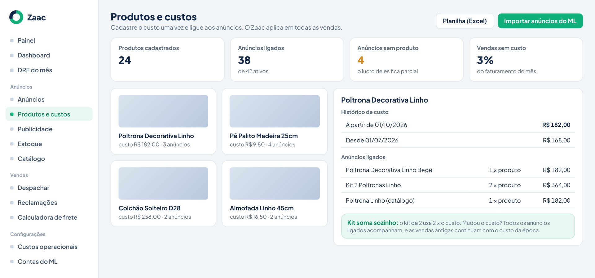
Cansado de atualizar o custo em várias planilhas?
Cadastre o custo uma vez só
Você liga cada anúncio ao produto e informa o custo. O Zaac aplica em todas as vendas, de todos os anúncios ligados.
- Kit de 2 usa 2 × o custo, sem conta manual
- Histórico: vendas antigas mantêm o custo da época
- Aviso dos anúncios sem produto ligado
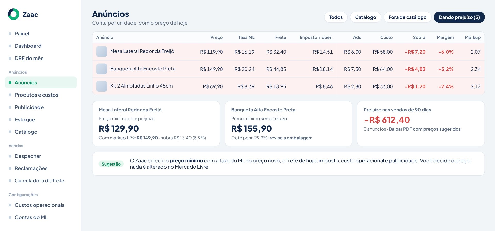
Vende bastante, mas o dinheiro não aparece?
Pare de vender no prejuízo
A conta de cada anúncio com o preço de hoje: taxa, frete, imposto, operação, ADS e custo do produto.
- Filtro "Dando prejuízo" com o valor perdido em 90 dias
- Preço mínimo sem prejuízo e preço pelo seu markup
- PDF com os preços sugeridos
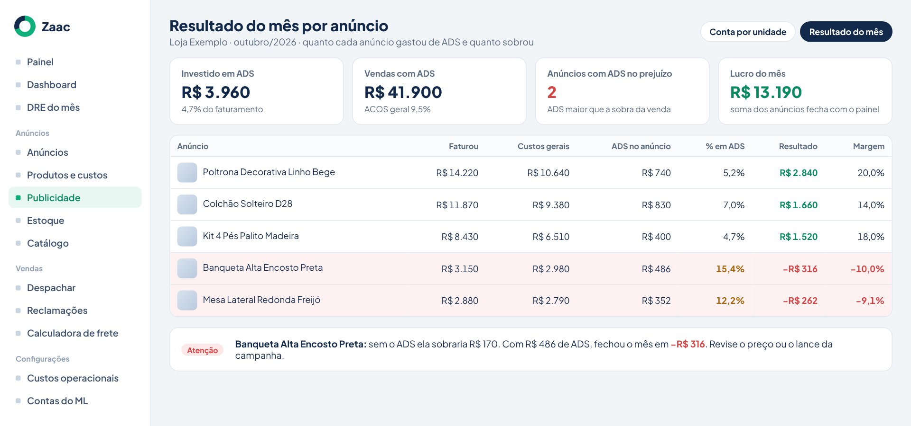
Investe em ADS e não sabe se está valendo a pena?
Quanto cada anúncio gasta de ADS
O investimento do Mercado Ads dividido por anúncio, com o resultado de cada um depois da publicidade.
- ADS e % em ADS de cada anúncio
- Anúncios que só dão prejuízo por causa do ADS
- A soma fecha com o lucro do painel
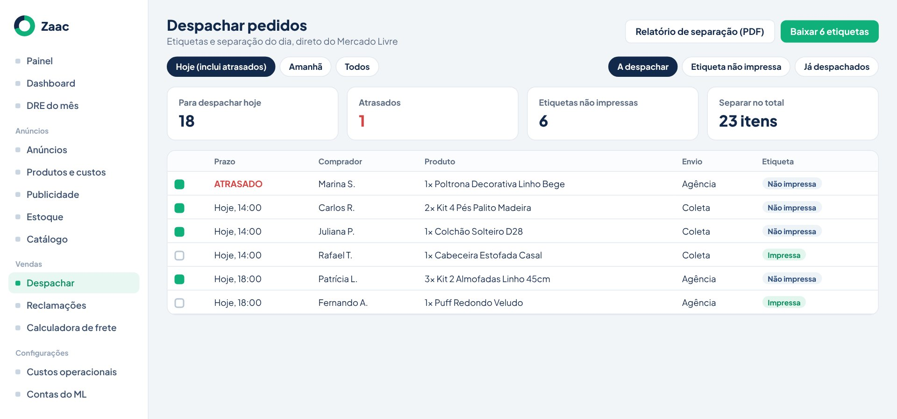
Atraso no envio já tirou pontos da sua reputação?
Etiquetas e separação do dia
Os pedidos prontos para envio, com o prazo de cada um, direto do Mercado Livre.
- Etiquetas em lote dos pacotes marcados
- Relatório de separação em PDF
- Atrasados em vermelho
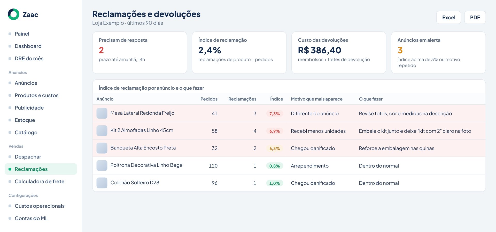
As reclamações estão derrubando sua reputação?
Menos reclamação, mais reputação
O índice de reclamação de cada anúncio, o motivo que mais aparece e o que fazer para diminuir.
- Índice por anúncio, com alerta acima de 3%
- Motivo repetido no mesmo produto
- O que fazer: foto, descrição, embalagem
- Prazo de resposta e custo das devoluções
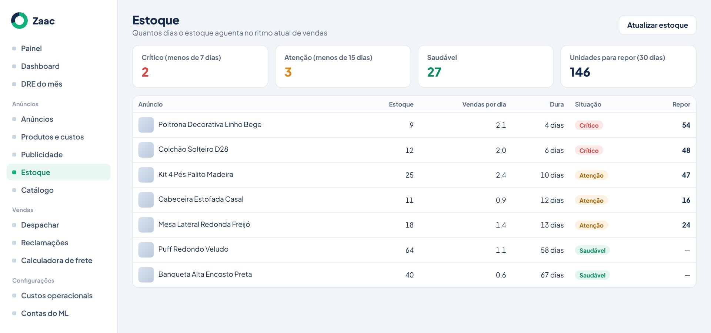
Já perdeu venda porque o produto acabou?
Quantos dias o estoque aguenta
O estoque de cada anúncio cruzado com o ritmo de vendas.
- Crítico abaixo de 7 dias, atenção abaixo de 15
- Quanto repor para 30 dias
- Original e catálogo somados
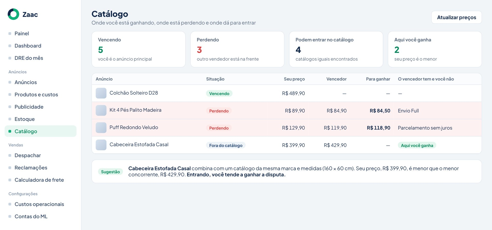
Perde vendas no catálogo e não sabe por quê?
Ganhe a disputa do catálogo
Veja onde você está vencendo ou perdendo, o preço para ganhar e quais anúncios podem entrar em um catálogo.
- Vencendo, perdendo ou fora da disputa
- Preço para ganhar e o que o vencedor tem a mais
- Sugestão de catálogo igual ao seu produto, com "aqui você ganha"
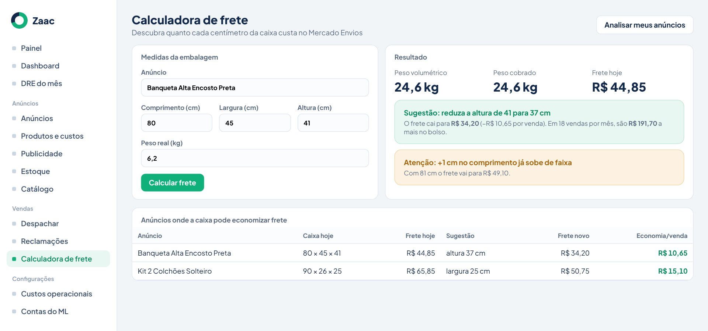
O frete está comendo a sua margem?
Cada centímetro da caixa custa
Simule as medidas da embalagem e veja o frete do Mercado Envios, com sugestão de onde cortar.
- Peso real × peso volumétrico
- Medida que cai para a faixa mais barata
- Análise dos seus anúncios com economia por venda
Imagens ilustrativas com dados fictícios.
“Criei o Zaac porque já vendi no Mercado Livre sem colocar o custo da operação na conta. Eu achava que estava lucrando. Não quero que isso aconteça com você.”
Adriano Novais, criador do Zaac MLPlanos simples
30 dias grátis em qualquer plano. Sem cartão para começar.
Perguntas frequentes
Preciso digitar as vendas?
Não. Vendas, fretes, taxas e ADS vêm do Mercado Livre sozinhos. Você só cadastra o custo do produto, o imposto e os custos da operação.
O Zaac mexe nos meus anúncios?
Não altera preço, anúncio nem estoque. Ações como baixar etiquetas só acontecem quando você clica.
É seguro conectar minha conta?
Sim. A conexão é pela autorização oficial do Mercado Livre. O Zaac nunca pede a sua senha do ML.
Preciso de cartão para testar?
Não. São 30 dias grátis, sem cartão.
Descubra quanto sobra de verdade
Conecte sua conta e veja o lucro real de cada anúncio em poucos minutos.
Quero ver meu lucro real30 dias grátis · sem cartão